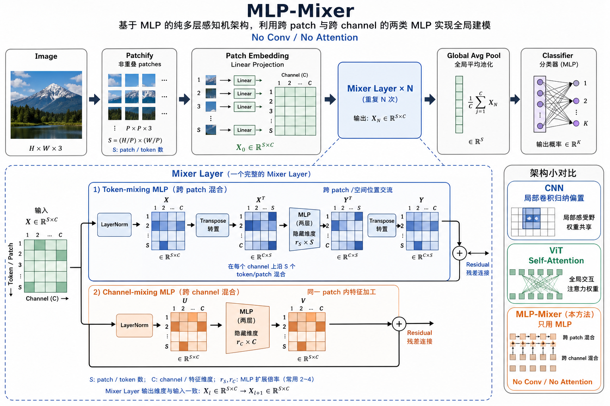
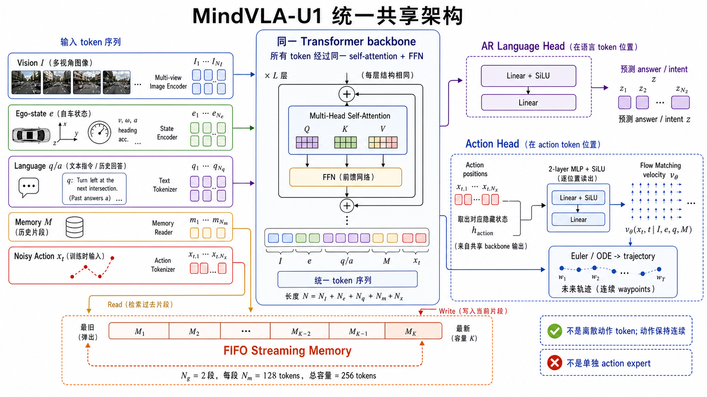
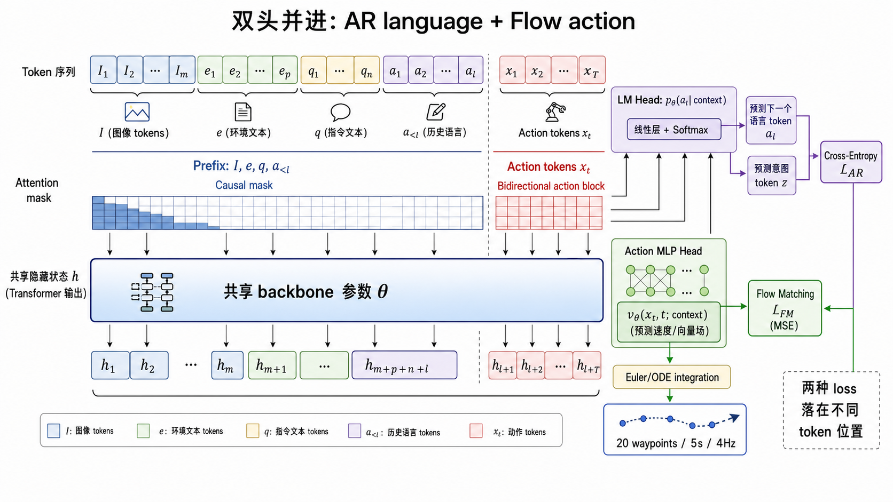
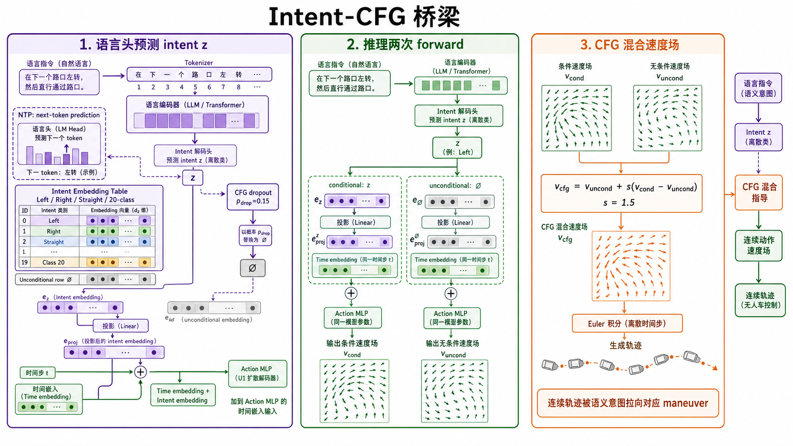
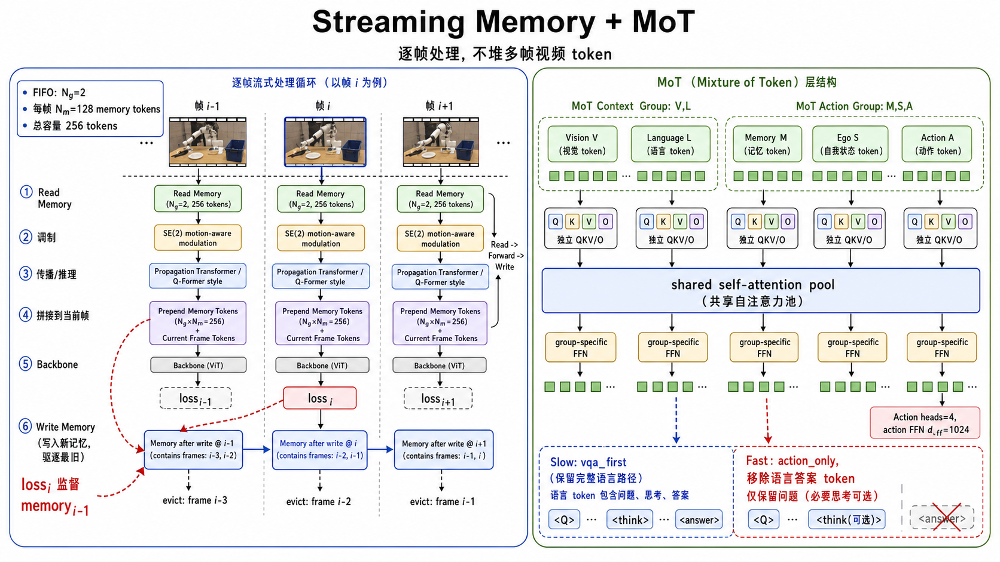

MLP-Mixer：只用 MLP 做视觉建模的完整解读
MLP-Mixer 是 Google Research 在 2021 年提出的视觉架构。它刻意不用 convolution，也不用 self-attention，只靠两类 MLP 分别混合空间位置和通道特征，证明了“卷积和注意力足够强，但并非好视觉模型的必要条件”。
1. 一句话总览
MLP-Mixer 可以理解为“把图像切成一堆 patch 后，用两把梳子反复梳理”：第一把梳子沿着 patch 方向梳，让不同空间位置交换信息；第二把梳子沿着 channel 方向梳，让同一个位置内部的特征维度重新组合。每一层都保持同样的二维表格形状，最后对所有 patch 做平均池化并分类。

2. 它主要解决什么问题
MLP-Mixer 的直接任务是图像分类，论文主要在 ImageNet、CIFAR、Pets、Flowers 和 VTAB-1k 等分类/迁移评测上做实验。但它真正想回答的问题更基础：视觉模型一定需要卷积或注意力吗？
在 MLP-Mixer 之前，视觉主流有两条路：CNN 依赖局部感受野、权重共享和平移等变性；ViT 把图像 patch 当 token，用 self-attention 做全局交互。MLP-Mixer 的实验目标不是提出一个万能替代品，而是把结构归纳偏置降到很低，观察一个“纯 MLP”模型在大规模数据和现代正则化下能走多远。
主要用途
图像分类、视觉表征学习、架构对照实验，以及研究不同归纳偏置对泛化的影响。
不主要用于
检测、分割、低数据量小任务的默认 backbone。它缺少 CNN 的强局部先验，小数据下更容易过拟合。
研究价值
把“空间混合”和“通道混合”拆开，展示只用 dense layer 也能形成竞争性视觉模型。
3. 核心想法
MLP-Mixer 把图像变成一个二维矩阵：一维是 token，也就是 patch 位置；另一维是 channel，也就是每个 patch 的隐藏特征维度。假设输入图像大小为 ，patch 大小为 ，那么 patch 数量是：
每个 patch 先经过一个线性投影，得到维度为 的向量。于是整张图变成：
接下来所有 Mixer Layer 都围绕这个 表格工作。它不在图像二维平面上滑卷积核，也不计算 token 之间的 attention score，而是使用两个方向的 MLP：
- Token-mixing MLP：固定一个 channel，看这个 channel 在所有 patch 上的值，让不同空间位置交换信息。
- Channel-mixing MLP：固定一个 patch，看这个 patch 内所有 channel 的值，让特征维度彼此组合。
4. 结构细拆
MLP-Mixer 的整体结构很短：Patchify、Patch Embedding、堆叠 Mixer Layer、Global Average Pooling、Linear Classifier。它借鉴了 ViT 的 patch 输入形式和 Transformer 的残差/归一化风格，但核心交互模块不是 attention。
4.1 Patch Embedding
Patch Embedding 做两件事：先把图像切成不重叠 patch，再把每个 patch 的原始像素向量投影到隐藏维度 。如果 ，一个 RGB patch 的原始长度是 。线性投影后，每个 patch 成为一个 维 token。
这一步和 ViT 很像。区别是 ViT 通常加 position embedding，而 MLP-Mixer 论文里不加显式位置编码，因为 token-mixing MLP 的权重对 token 顺序敏感；换句话说，模型已经知道“第几个 patch”对应矩阵中的固定位置。
4.2 Mixer Layer
一个 Mixer Layer 由两个残差子层组成。每个子层前面都有 LayerNorm，中间是两层 MLP 和 GELU 激活。
| 子层 | 输入视角 | 混合方向 | 共享方式 | 直观作用 |
|---|---|---|---|---|
| Token-mixing MLP | 把 转置成 | 沿 token/patch 维度 | 同一套 MLP 对每个 channel 重复使用 | 让远处 patch 直接通信，建立全局空间关系 |
| Channel-mixing MLP | 保持 | 沿 channel/feature 维度 | 同一套 MLP 对每个 token 重复使用 | 在单个 patch 内组合颜色、纹理、形状等特征 |
论文强调这种设计把两类混合操作分得很清楚：跨空间位置的信息聚合由 token-mixing 做，每个位置内部的特征加工由 channel-mixing 做。CNN 和 ViT 通常把这两类操作以不同方式耦合在一起。
4.3 分类头
堆叠 个 Mixer Layer 后，模型对 个 patch token 做 global average pooling，得到一个 维图像表示，再接线性分类器输出类别 logits。这个分类头简单、稳定，也避免了 ViT 中常见的 class token 设计。
5. 公式与张量形状
令 ，其中 是 patch/token 数， 是隐藏通道数。每个 Mixer Layer 可写成两个残差更新。
Token-mixing
对每个 channel ，取所有 patch 上的向量 ，用同一套 MLP 混合空间位置：
这里 和 对所有 channel 共享， 通常是 GELU。它的功能不是“看某个局部邻域”，而是让一个 channel 上的全部 patch 位置都进入同一个 dense transform。
Channel-mixing
对每个 patch ，取该 patch 的所有 channel 向量 ，用同一套 MLP 混合特征维度：
最终 的形状仍是 ，所以 Mixer Layer 可以重复堆叠。这个“形状不变”的等宽结构也被论文称为 isotropic design，与典型 CNN 的金字塔式逐层降采样不同。
6. 特点、优势和代价
| 特点 | 说明 | 工程含义 |
|---|---|---|
| 结构极简 | 核心只有 dense layer、GELU、LayerNorm、residual。 | 实现短，容易做架构对照和消融。 |
| 无 convolution | 不显式使用局部卷积核、平移等变性等 CNN 先验。 | 大数据下可以学到有效模式，小数据下先验不足会更吃亏。 |
| 无 self-attention | 不构造 attention map。 | 避免 attention 的二次复杂度形式，但 token MLP 参数与 token 数绑定。 |
| 全局 token 混合 | Token-mixing MLP 的感受野覆盖所有 patch。 | 可以早期建立远距离关系，不需要靠很多层逐步扩大感受野。 |
| 输入尺寸敏感 | token-mixing MLP 的权重形状依赖 。 | 换分辨率或 patch 数时需要插值、改权重形状或重新训练相关层。 |
MLP-Mixer 的关键优势不是“永远比 CNN/ViT 更强”，而是以非常简单的模块达到可竞争的 accuracy/cost trade-off。论文结果显示，当预训练数据足够大时，Mixer 的表现明显改善；当只在 ImageNet 规模或从零训练时，它更容易过拟合，落后于更有视觉先验的模型。
7. 如何使用
最简单的使用方式是直接用已有实现，例如 `timm` 中的 Mixer 模型，或参考 Keras/labml 的教学实现。自定义时需要先确定图像尺寸、patch size、隐藏维度、Mixer Layer 数量、token MLP hidden dim、channel MLP hidden dim。
7.1 关键超参数怎么选
| 参数 | 含义 | 选择建议 |
|---|---|---|
| image size | 输入图像分辨率 | 分类常用 224；小数据可用 64 或 128 做快速实验。 |
| patch size | 每个 patch 的边长 | 小 patch 细节更多但 更大；大 patch 更快但会损失局部细节。 |
| hidden size | 每个 patch token 的特征维度 | 决定通道容量，常与模型规模一起增大。 |
| num layers | Mixer Layer 堆叠次数 | 论文中 S/B/L/H 规模分别约 8/12/24/32 层。 |
| token MLP dim | Token-mixing MLP 的中间维度 | 通常低于或接近 的若干倍，控制空间混合容量。 |
| channel MLP dim | Channel-mixing MLP 的中间维度 | 常设为 的 4 倍左右，类似 Transformer FFN expansion。 |
7.2 PyTorch 骨架示例
下面是最小化骨架，用于理解结构。生产训练还需要更完整的数据增强、正则化、学习率调度、权重衰减和混合精度。
import torch
import torch.nn as nn
class MlpBlock(nn.Module):
def __init__(self, dim, hidden_dim, dropout=0.0):
super().__init__()
self.net = nn.Sequential(
nn.Linear(dim, hidden_dim),
nn.GELU(),
nn.Dropout(dropout),
nn.Linear(hidden_dim, dim),
nn.Dropout(dropout),
)
def forward(self, x):
return self.net(x)
class MixerBlock(nn.Module):
def __init__(self, num_patches, channels, token_dim, channel_dim, dropout=0.0):
super().__init__()
self.norm1 = nn.LayerNorm(channels)
self.token_mlp = MlpBlock(num_patches, token_dim, dropout)
self.norm2 = nn.LayerNorm(channels)
self.channel_mlp = MlpBlock(channels, channel_dim, dropout)
def forward(self, x):
y = self.norm1(x)
y = y.transpose(1, 2)
y = self.token_mlp(y)
y = y.transpose(1, 2)
x = x + y
x = x + self.channel_mlp(self.norm2(x))
return x
class MLPMixer(nn.Module):
def __init__(self, image_size=224, patch_size=16, num_classes=1000,
channels=768, depth=12, token_dim=384, channel_dim=3072):
super().__init__()
num_patches = (image_size // patch_size) ** 2
patch_dim = patch_size * patch_size * 3
self.patchify = nn.Unfold(kernel_size=patch_size, stride=patch_size)
self.proj = nn.Linear(patch_dim, channels)
self.blocks = nn.Sequential(*[
MixerBlock(num_patches, channels, token_dim, channel_dim)
for _ in range(depth)
])
self.norm = nn.LayerNorm(channels)
self.head = nn.Linear(channels, num_classes)
def forward(self, image):
x = self.patchify(image).transpose(1, 2)
x = self.proj(x)
x = self.blocks(x)
x = self.norm(x)
x = x.mean(dim=1)
return self.head(x)7.3 训练建议
- 小数据集上不要期待裸 Mixer 直接压过强 CNN；建议使用 RandAugment、Mixup、CutMix、Dropout、Stochastic Depth、Weight Decay。
- 如果换输入分辨率，注意 变化会影响 token-mixing MLP 的权重形状。
- 如果只是要一个强通用视觉 backbone，现代 ConvNeXt、Swin、ViT/DeiT 等通常更成熟；如果要研究归纳偏置、结构简化或 attention-free 视觉模型，MLP-Mixer 很合适。
8. 与 CNN/ViT 对比
| 维度 | CNN | ViT | MLP-Mixer |
|---|---|---|---|
| 核心操作 | 卷积核在局部窗口滑动 | Self-Attention 计算 token 间权重 | 两个方向的 MLP 分别混合 token 与 channel |
| 空间交互 | 早期局部，深层逐渐扩大感受野 | 每层可全局交互 | Token-mixing 每层可全局交互 |
| 归纳偏置 | 强：局部性、权重共享、平移等变 | 中等：patch 序列 + attention | 弱：固定 token 顺序 + MLP 参数共享 |
| 对数据规模的依赖 | 较低，尤其在传统视觉任务上稳健 | 较高，但可通过预训练和正则化改善 | 较高，小数据下更容易过拟合 |
| 输入尺寸灵活性 | 通常较好 | 需处理 position embedding 插值 | 需处理 token-mixing MLP 的 token 数绑定 |
一个容易误解的点是：MLP-Mixer 并不是“普通 MLP 直接吃整张图片”。它仍然先切 patch，并且通过共享参数把计算组织成可扩展的二维表格操作。它的创新不是 MLP 本身，而是把 MLP 放在两个正交维度上，形成清晰的空间混合和通道混合。
9. 论文实验结论
论文的实验结论可以概括为三条：第一，Mixer 在大规模预训练下可以达到接近 SOTA 的 accuracy/cost trade-off；第二，数据规模越大，Mixer 与 ViT/CNN 的差距越小；第三，从零在 ImageNet 上训练时，Mixer 仍会明显受限于过拟合问题。
| 论文观察 | 具体数字或现象 | 解释 |
|---|---|---|
| JFT-300M 预训练后表现强 | Mixer-H/14 在 ImageNet top-1 达到 87.94。 | 大数据能补足弱归纳偏置，让模型自己学空间结构。 |
| 吞吐有优势 | 论文报告 Mixer-H/14 相比 ViT-H/14 有明显更高吞吐，在一个比较中约快 2.5 倍。 | 不构造 attention map，计算图更偏 dense MLP。 |
| 从零训练更弱 | Mixer-B/16 从 ImageNet 训练得到约 76.44 top-1，落后同规模 ViT。 | 没有卷积局部先验，数据不足时更容易记训练集而不是泛化。 |
| 不使用 position embedding | 论文解释 token-mixing MLP 对 token 顺序敏感。 | 空间位置被“矩阵列/行的固定位置”隐式编码。 |
论文中的典型模型规格
| 模型 | 层数 | Patch | Hidden | Token 数 | 参数量 M | ||
|---|---|---|---|---|---|---|---|
| S/32 | 8 | 32 | 512 | 49 | 2048 | 256 | 19 |
| S/16 | 8 | 16 | 512 | 196 | 2048 | 256 | 18 |
| B/32 | 12 | 32 | 768 | 49 | 3072 | 384 | 60 |
| B/16 | 12 | 16 | 768 | 196 | 3072 | 384 | 59 |
| L/16 | 24 | 16 | 1024 | 196 | 4096 | 512 | 207 |
| H/14 | 32 | 14 | 1280 | 256 | 5120 | 640 | 431 |
10. 局限与适用边界
MLP-Mixer 的局限来自它的优点：它太“干净”了。没有局部卷积先验，就需要更多数据或更强正则化；token-mixing MLP 与 token 数绑定，输入分辨率变化时没有 CNN 那样天然灵活；它主要在分类任务上验证，迁移到检测、分割、密集预测时需要额外设计。
适合优先尝试
- 图像分类或全局表征学习。
- 有中大规模预训练数据。
- 要做 CNN/ViT 以外的归纳偏置对照。
- 想要一个简单、可解释、易改的 baseline。
不适合盲目上
- 小样本、强局部结构、低算力场景。
- 输入分辨率频繁变化但不想处理权重适配。
- 目标检测、分割等需要多尺度空间输出的任务。
- 只追求当前最强视觉 backbone。
11. 工程建议
- 先用小模型验证管线：例如 、、4 个 block，在 CIFAR 或小分辨率上检查 loss 能否正常下降。
- 正则化不能省：Mixup、CutMix、RandAugment、weight decay、dropout、stochastic depth 对 Mixer 很重要。
- 分辨率变化要谨慎：如果 从 196 变成 256，token-mixing 层的权重形状随之改变。
- 不要把它误解为全连接大矩阵：Mixer 的可行性来自 patch 化、两个轴向共享 MLP、残差与归一化，而不是把整张图 flatten 后硬接 MLP。
- 读论文时关注归纳偏置：它的意义更多是“架构思想实验 + 可竞争模型”，不是一个永远最优的视觉模块。
12. 参考来源
本报告基于本地保存的完整来源快照整理，快照位于 `C:\Users\tianxl\mlp_mixer_report\sources`。正文没有写入抓取日志或失败重试，只保留与理解 MLP-Mixer 有关的分析结论。
- Tolstikhin et al., MLP-Mixer: An all-MLP Architecture for Vision, arXiv:2105.01601。本地保存 PDF 与 16 页文本抽取。
- Michał Chromiak, MLP-Mixer: MLP is all you need... again?。用于辅助解释 token/channel mixing、复杂度和直觉类比。
- labml.ai annotated PyTorch implementation。用于核对 token 维转置和实现接口。
- Keras example: Image classification with modern MLP models。用于补充 Keras 实现、patch extraction、MLP-Mixer/FNet/gMLP 对照。
MindVLA-U1：统一流式 VLA 自动驾驶架构的双头与 Intent-CFG 机制
本部分解析 arXiv:2605.12624《MindVLA-U1: VLA Beats VA with Unified Streaming Architecture for Autonomous Driving》。重点不是复述排行榜，而是把论文里最核心的两个结构拆清楚：一套共享 VLM backbone 同时接出 autoregressive language head 和 flow-matching action head；再用 Intent-CFG 把语言侧预测出的离散驾驶意图变成连续轨迹生成的可控引导。
13. 论文定位与一句话结论
这篇论文讨论的是自动驾驶里的 VLA，也就是 Vision-Language-Action。传统 VA 模型直接从视觉到动作，动作接口天然连续，规划精度通常强；但它少了语言解释、意图控制和可检查的语义接口。很多早期驾驶 VLA 把轨迹也当语言 token 生成，或者让一个外置 action expert 读取 VLM 特征，结果常见问题是：语言能力有了，动作精度、实时性和时序连续性反而受损。
MindVLA-U1 的核心判断是：VLA 落后 VA 不一定是“语言范式”错了，而是接口设计错了。它把语言和动作放回各自自然的输出空间：语言仍然自回归生成 token，动作仍然是连续轨迹；但两者共享同一套 backbone 表征。白话说，就是同一个大脑看同一段路况，上半张嘴负责说“我要左转”，下半只手负责画出连续轨迹，而不是先把轨迹翻译成文字再翻译回控制量。

14. 为什么说它是统一共享 backbone
MindVLA-U1 最重要的结构选择，是让 vision、ego-state、language、memory、noisy action tokens 都进入同一个 VLM backbone。论文强调 noisy action tokens 不走单独计算路径，而是像视觉 token 和语言 token 一样穿过每一层 transformer 的 self-attention 与 FFN。这样做有两个后果：第一，动作 token 在表征构建时能直接看见语言、记忆和场景；第二，语言 loss 与动作 loss 的梯度都能回到共享层，而不是只训练最后一个外挂规划器。
输入序列可以概念化成：
其中 是多视角图像 token， 是 ego 历史状态， 是语言 query， 是已生成或训练用的语言 answer tokens， 是流式记忆 token， 是 flow matching 当前噪声程度下的 action tokens。经过共享 backbone 后得到隐藏状态：
论文的注意力 mask 也很关键：语言 prefix 按自回归因果 mask 处理，action tokens 之间则是双向可见。直觉上，语言像一句话从左到右生成；轨迹不是一句话，而是一整条连续曲线，未来 20 个 waypoint 应该互相协调，所以 action block 需要整体可见。

| 组件 | 在序列中的角色 | 为什么放进同一 backbone |
|---|---|---|
| Vision tokens | 当前多视角图像感知 | 提供道路、车道线、交通参与者、信号灯等视觉证据。 |
| Ego-state | 历史位置、速度、加速度 | 让模型知道车辆自身动力学状态，不只看外部图像。 |
| Language | 问题、回答、意图 token | 提供可解释语义与可控 intent，让动作不是黑箱规划。 |
| Memory | 过去帧压缩状态 | 用少量 token 携带长时序上下文，避免重复塞多帧图像。 |
| Noisy action | 当前扩散/flow 状态下的轨迹变量 | 动作生成在 backbone 内发生，动作 token 能参与共享注意力。 |
15. 双头并进：AR language head + Flow action head
“双头并进”不是两个模型串联，而是在同一个 backbone 输出的不同 token 位置上接不同 readout head。语言 token 位置接 LM head，用 cross-entropy 训练；action token 位置接一个轻量 action MLP，用 flow matching MSE 训练。两种目标共享 backbone 参数，但目标不抢同一个输出槽位，所以训练能稳定。

15.1 AR language head：负责“说清楚”和“给 intent 命名”
语言头沿用标准 VLM/LLM 的自回归形式。给定当前图像、ego 状态、query 和之前已经生成的 answer tokens，它预测下一个 token。公式是：
这里的 可以是普通场景问答 token，也可以是论文强调的 intent token。Intent-CFG 里最关键的一步，就是让语言头通过 next-token prediction 预测当前场景的驾驶意图 ，例如 Left、Right、Go Straight，或者扩展到 MindLabel 的 20 类更细意图。白话说，语言头不是只负责给用户解释，它还负责把场景压缩成一个可被动作头使用的“驾驶意图标签”。
15.2 Flow action head：负责“画出连续轨迹”
动作头不把轨迹离散化成语言 token。它把未来轨迹视为连续变量，用 flow matching 学一个速度场。训练时，真实轨迹是 ，噪声是 ，在时间 上构造插值：
因为论文采用 是数据、 是噪声的约定，所以这条线从真实轨迹走向噪声的目标速度是：
Action MLP 要预测这个速度场：
推理时反过来，从高噪声轨迹开始，沿着模型预测的速度场积分回数据空间，得到未来 5 秒轨迹。论文默认只用 2 个 Euler steps。直觉上，flow action head 像在一张向量场地图上开车：每一步都问“当前位置的轨迹草稿应该往哪里修正”，两次修正后得到最终轨迹。
16. 训练与推理数据流：从一帧输入到轨迹输出
把模型真的跑起来，可以分成训练流和推理流。训练流同时喂入语言监督和真实轨迹；推理流先生成或取得 intent，再执行 flow matching 采样。下面这张简化 SVG 把最关键的数据依赖画成确定性图，弥补生成图里可能看不清的小字。
- 训练采样噪声轨迹。从真实未来轨迹 和高斯噪声 构造 ，把它作为 noisy action tokens 放进序列。
- 共享 backbone 前向。视觉、ego、语言、memory、action tokens 同时进入 transformer，得到各位置隐藏状态。
- 语言侧计算 AR loss。LM head 在语言位置预测下一个 answer token 或 intent token，优化 。
- 动作侧计算 flow loss。Action MLP 在 action 位置预测速度场，和 做 MSE。
- 推理先拿 intent。默认慢路径先通过语言头得到 intent ，也可以在 fast path 跳过完整语言回答。
- CFG 后积分出轨迹。条件速度场和无条件速度场混合后，用 Euler/ODE 从噪声走回连续 waypoint。
17. Intent-CFG：语言到动作的桥梁怎么做
Intent-CFG 是这篇论文最值得细读的模块。它解决的问题是：语言头到底有没有真正影响动作？如果只是多训练一个 VQA 任务，动作头可能完全忽略语言；如果把语言答案后处理成规则，又会断开端到端梯度。Intent-CFG 的设计是把“语言侧预测出的 intent token”变成“动作 flow 速度场的条件变量”，再用 classifier-free guidance 做可控增强。

17.1 训练阶段：让同一个 action head 同时学条件与无条件速度场
训练时有一个 intent embedding table。表里每个 intent class 有一行，例如 left、right、straight，扩展时也可以有 20 类 MindLabel intent；另外还有一个 learned unconditional row，记作 。选中的 intent embedding 会经过投影，然后残差式加到 action MLP 的 time embedding 上。
这里 是原本的时间步 embedding， 是 intent embedding， 是投影。白话说，flow matching 本来只知道“现在是第几个去噪时间步”，Intent-CFG 又塞给它一张小纸条：“这次请按左转/右转/直行的方向修轨迹。”
CFG dropout 的做法是：训练时以 的概率把真实或预测 intent 替换成 。这样同一套参数会学到两种函数：
前者是“知道 intent 的速度场”，后者是“不知道 intent 的默认速度场”。如果没有这一步，推理时就没有可靠的 unconditional baseline，也就没法做 CFG 混合。
17.2 推理阶段：两次 forward，混合速度场
推理时，模型先通过语言头预测 intent 。然后同一个 noisy action state 跑两次：一次条件为 ，一次条件为 。得到两个速度场后按 guidance scale 混合：
论文使用 。这个公式的直觉很直接：无条件速度场给出“在这个场景下大概合理的默认轨迹”；条件速度场相对无条件速度场的差值，代表“intent 想把轨迹往哪里拉”；乘以 后再加回默认场，就得到更明确的 intent 引导。它像导航语音对司机说“这次请更坚定地往左转”，但仍不脱离道路环境和动力学上下文。
| 变量/模块 | 论文里的作用 | 白话解释 |
|---|---|---|
| 语言头预测的 intent token | 模型对当前驾驶意图的语义命名。 | |
| 无条件 intent row | 不告诉模型具体意图时的默认动作倾向。 | |
| intent embedding table 查表结果 | 把离散 intent 翻译成 action head 可用的向量。 | |
| 训练时随机替换为 | 逼模型学会有意图和无意图两种模式。 | |
| 推理 CFG guidance scale | 控制“按 intent 拉轨迹”的力度。 |
17.3 为什么 GT intent 不一定比 NTP intent 更好
论文的消融很有意思：trajectory-derived Intent-CFG 和 GT-supplied 3-class Intent-CFG 基本没有提升 RFS；真正提升的是 NTP-predicted Intent-CFG 加 refined intent embedding。原因不是 GT 标签没用，而是 3-class left/right/straight 太粗，且和共享表征里的语义结构未必对齐。NTP intent 来自语言头，和 backbone 的场景表征是同一个系统里学出来的；它更像模型自己理解后的“内部命名”，用于引导动作时更顺手。

18. Streaming Memory 与 MoT：为什么它能接近 VA 的速度
虽然用户问题主要集中在双头和 Intent-CFG，但这两个模块必须放在论文的流式架构里理解。驾驶不是一段段独立视频 clip，而是连续流。MindVLA-U1 不把多个历史图像帧全部重新塞进 VLM，而是维护一个 FIFO memory channel：每一帧把过去压缩成固定数量的 memory tokens，下一帧读取、按 ego pose 做 motion-aware modulation，再继续推理。

具体参数是：每帧写入 个 memory tokens，FIFO 保存 个 frame-step entry，总容量 tokens。每个 memory entry 都是在当时 ego 坐标系下写入的，所以读取到当前帧时要用相对 SE(2) 变换做对齐：
论文把旋转 、平移 和归一化时间偏移组成 5 维特征，用轻量 MLP 映射成调制向量，加到历史 memory tokens 上。然后 propagation transformer 以 Q-Former 风格读取这些调制后的记忆，并在当前帧 forward 后写回新 memory。损失在第 帧不仅监督当前动作，也能监督第 帧写下的记忆，所以 memory 不是死缓存，而是端到端训练出的状态变量。

MoT 则是为了 fast/slow execution。慢路径保留 VQA 或 reasoning token，适合需要解释或复杂语义判断的场景；快路径把 answer/thinking tokens 物理移除，只保留必要 conditioning prefix 和 action 子图，从而减少序列长度。MoT 分为 context group 和 action group：Vision、Language 属于 context；Memory、Ego-state、Action 属于 action。二者有独立 Q/K/V/O 与 FFN，但共享 self-attention pool，所以信息仍能交互。

19. 实现参数与可复现级数据流
下面把论文中分散在主文与补充材料的实现信息合并成工程视角清单。它不是官方代码，但足够指导你读代码或复现一个同构模块。
| 部分 | 论文设置 | 实现含义 |
|---|---|---|
| VLM backbone | Qwen3-VL-2B， | 统一 token 序列的主 transformer。 |
| 冻结/训练 | vision encoder 冻结；visual merger、language model、ego encoders、memory module、action head 训练 | 降低视觉大模块训练成本，同时让融合和动作相关模块适配驾驶。 |
| Ego encoder | 位置、速度、加速度各一个轻量 MLP | 16 个历史状态，2 Hz 采样，编码成 ego tokens。 |
| Memory | ，，6 层 cross-attention，16 heads | 每帧压缩和读写固定 token 预算，支持流式长序列。 |
| Action head | 2-layer MLP + SiLU | 在 action token hidden states 上预测 6 维速度场。 |
| Action output | ，4 Hz，5 秒 horizon | 每个未来点预测 delta-position、velocity、acceleration。 |
| Flow inference | 2 Euler integration steps | 部署时采样步数很少，是速度接近 VA 的关键。 |
| 优化器 | AdamW，lr ，weight decay 0.1，50 epochs，BF16，DeepSpeed ZeRO-2，8 GPUs | 论文主训练配方。 |
| Flow loss 权重 | position 1.0，velocity 0.5，acceleration 0.5 | 位置是主目标，速度/加速度作为动力学辅助。 |
19.1 训练伪流程
- 读取当前多视角图像、ego history、语言 QA 或 intent 标注、真实未来轨迹。
- 从 FIFO memory 读历史 token，按当前 ego pose 做 SE(2) 对齐调制。
- 采样 和 ，把真实轨迹插值成 。
- 把 拼成统一序列，应用语言因果 mask 与 action 双向 mask。
- 共享 backbone 前向；LM head 算 ，action MLP 算 。
- 若使用 Intent-CFG，以 0.15 概率把 intent embedding 换成 。
- 用 propagation transformer 把当前 backbone 输出压缩成新 memory，写入 FIFO。
19.2 推理伪流程
- 读取当前帧和 FIFO memory；如果慢路径启用，先让语言头产生 answer 或 intent。
- 初始化 noisy action 。
- 每个 Euler step 上，分别用 和 跑条件/无条件速度场。
- 用 混合速度场，并把 沿 ODE 方向更新到更接近数据的时间点。
- 2 个 Euler steps 后得到 20 个 waypoint，并写回本帧 memory。
20. 结果、边界与应该怎么读
论文在 WOD-E2E 上报告了多个强结果：MindVLA-U1 + Intent-CFG 在验证集 RFS 上从 no-intent baseline 的 7.83 提到 7.92；MoT 也达到 7.92；RL 后训练在验证集达到 8.20，并和 human driver 8.13 作比较；官方 test split 上 MindVLA-U1 + RL 报告 RFS 7.87。报告这些数字时要同时注意三个边界。
| 结论 | 可以相信的范围 | 不应过度外推的部分 |
|---|---|---|
| 双头共享架构有效 | 在同一 checkpoint 里保留语言输出和连续动作输出，消融显示规划质量未因语言接口崩掉。 | 不代表任何 VLM 直接接一个动作头都能成功，动作接口、数据和训练 schedule 仍关键。 |
| Intent-CFG 提供语言到动作路径 | 速度场混合公式和消融表明 intent 可改变连续轨迹，NTP-predicted 版本带来 RFS 提升。 | GT 3-class intent 本身不够强；20-class 和更丰富语言条件仍是后续方向。 |
| VLA Beats VA | 主要指 WOD-E2E 开环评价中的 RFS/ADE 对比，以及统一架构达到近 VA 延迟。 | 不等同于闭环仿真、真实道路、所有数据集、所有 VA/VLA 方法上全面胜出。 |
| Streaming Memory 有价值 | 论文消融显示 streaming + memory 比 chunk-wise 与 streaming-no-memory 更好。 | 尚未完全隔离 detached-gradient memory 等更多变量。 |
21. Part II 参考来源
本部分基于本地保存的 arXiv PDF、TeX source、arXiv HTML、项目页与中文阅读博客整理。正文只保留技术主线，不写入抓取日志、重试过程或低价值搜索结果。
- Huang et al., MindVLA-U1: VLA Beats VA with Unified Streaming Architecture for Autonomous Driving, arXiv:2605.12624。本地保存 PDF 与 TeX source，重点核对 Method、Intent-CFG、Streaming Memory、MoT 与 implementation details。
- arXiv HTML version。用于快速交叉检索主文段落和公式。
- MindVLA-U1 project page。用于核对公开展示图、结果表和项目页对架构的概括。
- 知乎中文阅读报告。用于辅助中文解释、论文边界提醒和背景脉络整理。